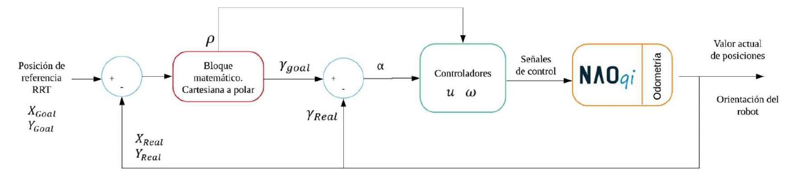

Humanoid Robot Navigation Controllers
Robotics Systems Engineer
A simulation-first robotics pipeline for robust humanoid navigation before hardware deployment.
This case study focuses on system design: RRT planning, interchangeable control modules, and safe comparative testing in CoppeliaSim.
The objective was to validate controller behavior under identical scenarios while preserving stability, path-following behavior, and collision-aware navigation.

Problem
Humanoid robots must navigate complex indoor spaces where locomotion stability, collision avoidance, and path tracking all interact under uncertainty. Direct hardware experimentation is costly and risky, so controller behavior must be validated safely before real-world deployment.
- Indoor environments include obstacles and constrained paths that stress navigation behavior.
- Controller stability during locomotion is difficult to tune without controlled testing loops.
- Teams need repeatable scenario execution to compare alternatives fairly.
Solution
The project implemented a simulation-based robotics development pipeline in which RRT generated feasible paths and controller modules executed trajectory tracking on a NAO model in CoppeliaSim.
Two controllers were built and evaluated under identical scenarios: a classical PID controller and a Lyapunov-based nonlinear controller. This architecture made planning, control, and evaluation layers independently testable while preserving end-to-end integration fidelity.
System Architecture

Environment (CoppeliaSim) -> RRT Path Planner -> Controller (PID or Lyapunov) -> NAO Robot Kinematics -> State Feedback -> Error Computation -> Monitoring GUI.
- Planning layer: Generates collision-aware paths from environment constraints.
- Control layer: Executes interchangeable tracking controllers over the planned trajectory.
- Simulation layer: Provides safe, repeatable robotics experimentation in CoppeliaSim.
- Visualization layer: Qt-based interface for monitoring and experiment setup.
Engineering Decisions
- Simulation-first workflow enabled safer iteration and lower experimentation cost.
- RRT was chosen for exploration-based path generation in obstacle-rich spaces.
- PID and Lyapunov controllers were compared to evaluate linear and nonlinear stability approaches.
- A Qt GUI enabled human-in-the-loop scenario control and real-time behavior monitoring.
- Planner and controller were separated by design so modules could be swapped without rewriting the full pipeline.
Validation & Iteration Strategy
Validation relied on scenario-based simulation runs with varying obstacle layouts and disturbances. Each run used the same setup conditions to preserve a fair controller comparison and isolate behavioral differences.
- Repeated scenario execution in obstacle-rich environments.
- Error-based controller comparison with focus on tracking behavior.
- Qualitative observation of oscillation and convergence behavior across runs.
- Iteration loops driven by stability observations and failure-case replay.
My Role
- Designed the full robotics simulation pipeline from planning through control evaluation.
- Implemented the RRT path planner in Python.
- Developed the PID controller module.
- Developed the Lyapunov-based nonlinear controller module.
- Integrated controllers with the NAO model in CoppeliaSim.
- Built a Qt GUI for monitoring and experiment configuration.
- Designed the comparative evaluation methodology across shared scenarios.